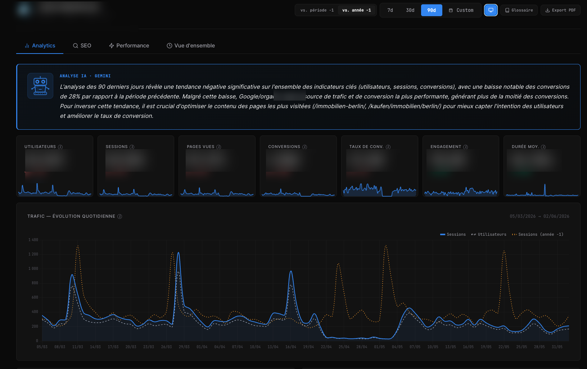

The problem
Decisions were made on manual exports, pulled from four different tools, at four different moments, by whoever remembered. Nobody could answer “are we doing better than last month?” without an afternoon of spreadsheet work.
Worse: the marketing numbers and the sales numbers lived in different worlds. Traffic was measured, leads were measured, and nothing connected them.
What I built
A single page. Analytics, Search Console and PageSpeed on one side; the CRM on the other; an AI analyst reading both and writing a verdict at the top.
- A sticky verdict banner: a traffic light plus a written diagnosis, regenerated on each load.
- Leads this month by segment (sellers, buyers, renters), compared against the same period last month, not against a projection.
- The commercial funnel: viewings, notary appointments, the listings with the most interest, and the ones with none.
- Twelve months of history, rebuilt retroactively from CRM date fields.
- A read-only director's view, so management sees the numbers without an account.

Switch business scenarios below to see how the dashboard combines marketing analytics with CRM sales velocity to produce an actionable diagnosis—and how the honest health score handles missing data.
- Inspect Search Console URL Inspection tool for /kaufen/ listings dropped from index.
- Re-verify Core Web Vitals LCP regression on mobile listing templates.
How it works
Google APIs are called straight from the browser. The CRM and the AI analyst go through n8n, which holds the keys.
Under the hood
API keys do not belong in a public page
The dashboard is a single HTML file served publicly. Two API keys sat in its source, readable by anyone who pressed Ctrl-U.
Two small n8n workflows now stand in front of them, each guarded by a shared secret and a hard daily call cap.
TRADE-OFF One key is restricted by HTTP referrer, so a server-side proxy cannot use it at all: the request comes back 403. That referrer restriction is what protects it, and I documented the reasoning rather than pretending the proxy covered everything.
A health score that admits ignorance
The score aggregates four pillars. When a data source fails to load, an average over the remaining three looks reassuringly normal. And meaningless.
Now the header reads “partial score (2/4 pillars)”, and the AI analyst is explicitly told, in its prompt, not to conclude that everything is fine when pillars are missing.
TRADE-OFF A dashboard that hides what it doesn't know is worse than no dashboard.
Comparing against a projection is comparing against a wish
On the 8th of the month, “69 leads, projected 260 by month end, versus 240 last month” reads like good news. It is arithmetic dressed as insight: the projection is just today's number multiplied up.
FIX Compare the 1st-to-today window against the same window last month. The projection stayed, demoted to a secondary figure where it belongs.
Rebuild history instead of waiting for it
“Can we see the last twelve months, like in Analytics?” The instinct is to start accumulating snapshots and answer in a year. But the CRM stores creation dates, sale dates and activity dates. The history was always there, unqueried.
Eighty-four counting queries later, twelve months appeared. Closed months are frozen in cache; only the current and previous months are recomputed.
TRADE-OFF The first load takes ten seconds. Every later one takes under two.
Results
In daily use. Eleven n8n workflows feed it: leads, listings pipeline, commercial activity, contact sources, follow-up hygiene, twelve-month history. The follow-up hygiene panel surfaced something nobody had measured: roughly half of recent leads had gone more than thirty days without contact and had no follow-up scheduled.
Still open. Revenue and commission figures exist in the CRM and are deliberately not displayed: the page is public, and locking access down has to come first.
Stack
- Vanilla JS + Chart.js: one self-contained HTML file, no build step
- GA4 Data API · Search Console API · PageSpeed Insights
- Gemini: the written verdict and per-tab syntheses
- n8n: key proxies, and eleven workflows querying the CRM
- onOffice REST API: HMAC-signed reads over leads, listings and activity
What I took away
The technically interesting part was reconstructing a year of history from date fields. The useful part was making the score say “I don't know”.
Every number on a management dashboard will eventually be used to justify a decision. A number that quietly averages away a missing quarter is not a number. It is a liability.